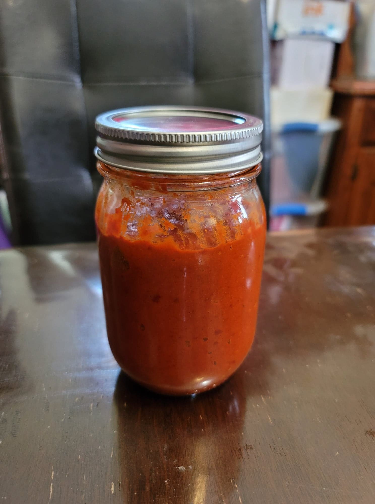

Harissa Paste

Ingredients:
- 7 Dried new mexico chilies, seeded and stemmed
- 1 6 oz jar Roasted red peppers, drained and patted dry
- 4 cloves Garlic, peeled
- 2 tbsp Tomato paste
- 1 tsp Caraway seeds, toasted and then ground
- 2 tsp Cumin
- 2 tsp Ground coriander
- 1 tsp Smoked paprika
- 1/2 tsp Cayenne
- 1/8 tsp Salt, or to taste
- 2 tbsp Lemon juice
- 2 tbsp Olive oil + more as needed
Instructions:
- Soak the dried chilies in hot water for at least 30 minutes, or until rehydrated.
- Combine all of the ingredients except the olive oil into a food processor. Then start the processor. Slowly drizzle in the 2 tbsp olive oil as it blends. Let it blend for a few minutes, or until it becomes a smooth paste.
- Transfer to a jar and cover with a thin layer of olive oil. Transfer to fridge to store.